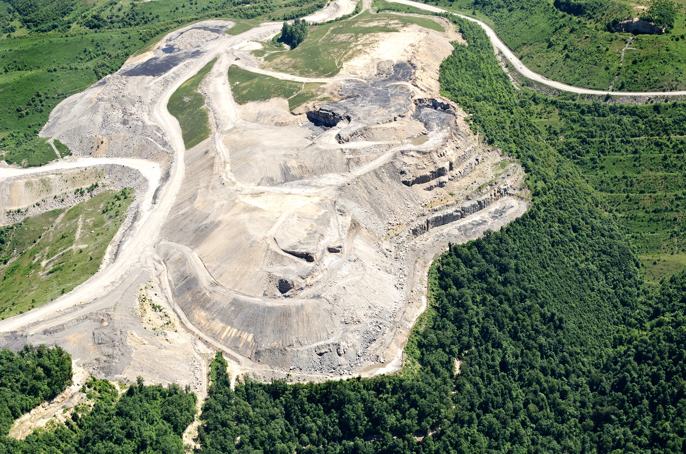
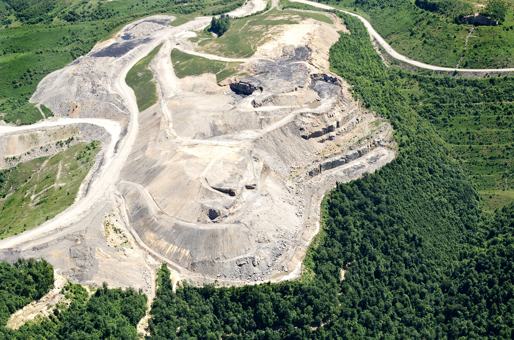

Metal Mining in the Canadian Shield
First, the ores must be extracted from the ground; surface and subsurface mining are the two primary methods used to do this. For minerals that are found close to the earth's surface, surface mining is the favored process. Open-pit, strip mines, mountaintop removal, and quarrying are examples of techniques that use explosives or heavy excavation equipment to remove the topsoil in order to reach the ores.
 

Subsurface mining may be used if the ores are too far down in the Earth. The subsurface techniques used differ according to the kind of mineral and whether it is a hard rock (e.g., hard metals) or a soft rock (e.g., coal). Nevertheless, a lot of basic requirements are shared by nearly all underground mines, such as vast ventilation systems to release drilling and blasting fumes, transport shafts, and exit points, to mention a few.
For hard rock such as metal, drilling and blast mining are the commonly employed methods. While for soft rocks like coal, operators have resorted to safer methods like longwall mining and using the room and pillar system.
The metals themselves need to be extracted from the ore after they've been retrieved. Smelting and electrolysis are the two main processes used to remove metal from crushed ore.
Smelting is the process of using heat to separate metal from ore, a reduction agent or other chemical is typically needed during said process. Iron can be smelted, for example, by burning charcoal with a hematite ore.
On the other hand, Electrolysis is the process of decomposing ores by an electrical current to extract the reactive metals.
Kennecott Mine Rio Tinto - (https://www.mining.com/rio-halts-kennecott-operations-after-earthquake/)
Quarrying - (https://slurrypro.com/en/quarrying/)
Mountaintop Removal - (https://cdn.exploreplanet3.com/web/student-resources/ECOS/casestudy/ECOS/mountain-mining.html)
Blast Mining - (Peter Goldberg | https://petergoldbergphoto.wordpress.com/2013/12/30/providence-underground-part-2-2/)
Room and Pillar - (Energy Information Administration | https://www.researchgate.net/figure/Schematic-Illustrating-Room-and-Pillar-Mining_fig9_279938993)
The Longwall Mining System - (Kira Zhang | https://www.linkedin.com/posts/kira-zhang-jing_one-picture-tells-you-what-the-underground-activity-6300223525504544768-xBH3?trk=public_profile)